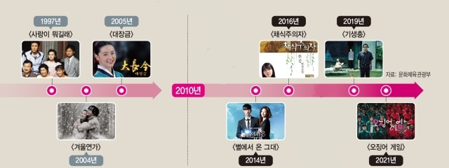
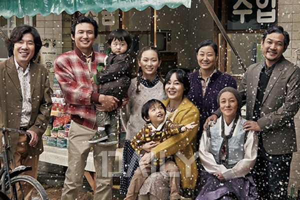

📌 시기 📌
한류 1.0: 1997-2000대 중반
K-드라마는 한류 시대를 열어 '한류 1.0'이라 불린다. 사랑이 뭐길래, 겨울연가, 대장금으로 세계에 한류드라마를 알렸고, 후에 꾸준히 한류 열풍에 바람을 일으키고 있다. 2010년대에 들어서 다양한 장르의 드라마와 영화까지 열풍을 일으키면서 한 분야로서 한류에 힘을 쓰고 있다.
🎈 장르 🎈
드라마, 영화, 가요한국 드라마의 가족애, 휴머니즘, 순애보 같은 사랑의 주제
영화 '국제시장'의 가족사진
🌎 대상 국가와 소비자 🌎
아시아, 소수의 마니아
MBC[1991. 11. 23 ~ 1992. 05. 31]
한류의 시작이라 할 수 있으며, 당시에 문화 교류가 활발하지 않았던 1997년 우리나라 드라마가 중국 CCTV에 방영되어 지속적인 인기를 끌었던 시점을 한류의 시초로 본다.
한국 드라마 '사랑이 뭐길래'를 시작으로 한류의 바람이 불었다. 2000년대 초 '겨울연가'를 통해 한류의 자리를 굳혔다.
사람들은 유럽 대신 한국으로 여행을 오기 시작했고, '겨울연가' 촬영지인 남이섬은 국내 관광지 중 가장 외국인 방문객이 많은 곳이 되었으며, 동남아에서는 유명한 촬영지가 되었다.
'겨울연가'를 이어 '대장금'은 홍콩에서 최종회 시청률이 50%대, 이란에서는 90%를 기록하는 폭발적인 인기를 끌었다. 이 성공으로 2000년대 중후반 한국 드라마의 새로운 트렌드로 사극이 부상했다.